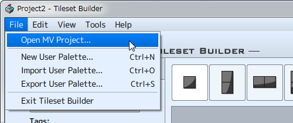
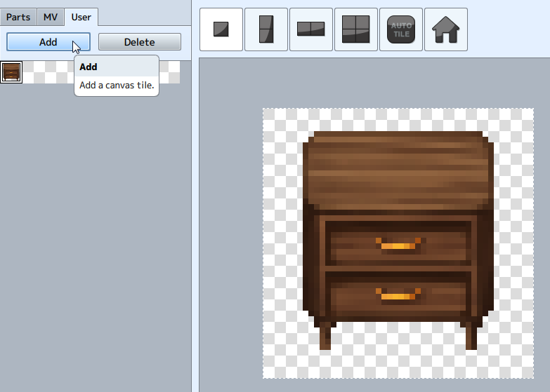
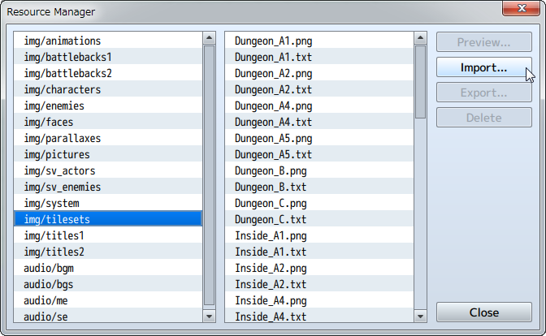

How to Start Creating Tilesets
Specify MV Project
An MV project needs to be open before creating a tileset using this software. Click [File] → [Open MV Project], and specify a [Game.rpgproject] file in the MV game folder.

Creating Tilesets
- (1) Combine Parts
-
Choose parts from the palette and stamp them on the edit screen. It is possible to combine multiple parts.
See [About Stamp Tool] for how to use the stamp tool. - (2) Make Adjustments With Tools
-
Adjust the stamp using the pen and eraser.
See [Basic Operations] → [Tools] for how to use tools. - (3) Add to the User Palette
-
Add the created stamps to the user palette.
*Created stamps cannot be exported unless they are added to the user palette. - （3）Export Tileset
-
Select stamps that have been added to the user palette and export to tileset.
See [Basic Operations] → [3 Editing Screens］] for how to export to tilesets. - (4) Add Tileset to MV
-
Import the exported tileset to MV.
To import use [Tools] → [Material Management].
*MV Operation Screen.
*See MV Help for details.